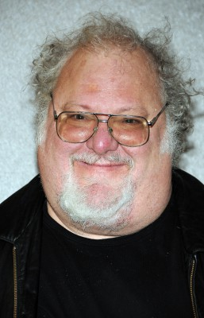
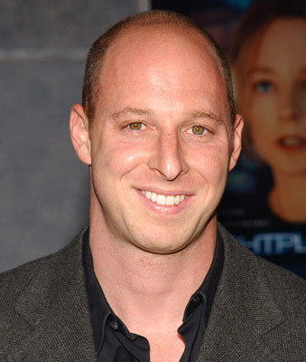

#876 State of Play - Stand der Dinge
Alternativ: State of Play

 IMDB-Wertung: 7.1 / 10
IMDB-Wertung: 7.1 / 10  Metascore: 64
Metascore: 64 
Die Zukunft des Kongressabgeordneten Stephen Collins sieht vielversprechend aus: Er wird als nächster Präsidentschaftskandidat gehandelt. Doch der Mord an seiner Assistentin erschüttert diese heile Welt. Sein Freund, der Journalist Cal McCaffrey, soll mit Partnerin Della Nachforschungen für ihre Chefin Cameron anstellen. Sie entdecken die Spuren eines gewaltigen Komplotts.
Jahr: 2009
Dauer: 127 Minuten
FSK: 12
Land: USA Studio: Universal PicturesTonspuren: DTS - ,
Untertitel: Deutsch,
Auflösung: 1080p (1920x816) Größe: 8284 MB
Genre: Krimi, Drama, Mystery, Thriller
Regisseur: Kevin Macdonald
Drehbuch: Matthew Michael Carnahan, Tony Gilroy, Billy Ray, Paul Abbott
Soundtrack: Alex Heffes
Darsteller:
 Russell Crowe als Cal McAffrey
Russell Crowe als Cal McAffrey Ben Affleck als Stephen Collins
Ben Affleck als Stephen Collins Rachel McAdams als Della Frye
Rachel McAdams als Della Frye Helen Mirren als Cameron Lynne
Helen Mirren als Cameron Lynne Robin Wright als Anne Collins
Robin Wright als Anne Collins Jason Bateman als Dominic Foy
Jason Bateman als Dominic Foy Jeff Daniels als George Fergus
Jeff Daniels als George Fergus Michael Berresse als Robert Bingham
Michael Berresse als Robert Bingham Harry Lennix als Detective Bell
Harry Lennix als Detective Bell-  Josh Mostel als Pete
 Michael Weston als Hank
Michael Weston als Hank Barry Shabaka Henley als Gene Stavitz
Barry Shabaka Henley als Gene Stavitz Viola Davis als Dr. Judith Franklin
Viola Davis als Dr. Judith Franklin David Harbour als PointCorp Insider
David Harbour als PointCorp Insider- Tuck Milligan als PointCorp Executive
 Brennan Brown als Andrew Pell
Brennan Brown als Andrew Pell Maria Thayer als Sonia Baker
Maria Thayer als Sonia Baker- Wendy Makkena als Greer Thornton
 Zoe Lister-Jones als Jessy
Zoe Lister-Jones als Jessy Michael Jace als Officer Brown
Michael Jace als Officer Brown- Rob Benedict als Milt
- LaDell Preston als Deshaun Stagg
- Dan Brown als Vernon Sando
 Katy Mixon als Rhonda Silver
Katy Mixon als Rhonda Silver-  Shane Edelman als D.A. Purcell
- Cornell Womack als Junior Detective #1
 Gregg Binkley als Ferris
Gregg Binkley als Ferris- Joy Spears als Waitress / Dancer #1
 Chris Matthews als MSNBC Reporter
Chris Matthews als MSNBC Reporter- Lou Dobbs als CNN Reporter
- Stuart Brazell als Karaoke Bar Hostess
 Don Abernathy als Hospital Employee , uncredited
Don Abernathy als Hospital Employee , uncredited- Michael Alban als Man in Market Place , uncredited
- Woody Andrews als Witness , uncredited
- Kevin Bangos als Foreign Press Writer , uncredited
- Ashley Bell als Voice , uncredited
 Christie Beran als Pedestrian , uncredited
Christie Beran als Pedestrian , uncredited Robert Bizik als Physician , uncredited
Robert Bizik als Physician , uncredited Bill Blair als Newspaper Employee , uncredited
Bill Blair als Newspaper Employee , uncredited- Michael Blumenstock als Camera Man , uncredited
- Juan Eloy Carrera als Washington Lobbyist , uncredited
- Paul Dietz als Waiter , uncredited
 Patricia DiZebba als Senate Staff , uncredited
Patricia DiZebba als Senate Staff , uncredited- Matt J. Doyle als Politician , uncredited
- Lourdes Faberes als Reporter , uncredited
- Paul Fahrenkopf als Hearing Attendee , uncredited
 Liam Ferguson als Newspaper Reporter , uncredited
Liam Ferguson als Newspaper Reporter , uncredited- Alexis Fowlkes als Girl , uncredited
- Eileen Grubba als Peggy , uncredited
 Matt Gulbranson als Collins' Driver , uncredited
Matt Gulbranson als Collins' Driver , uncredited
Datei: X:\2009(N-Z)\State of Play - Stand der Dinge (2009, FSK12, 1920x816).mkv seit 10.04.2015
Festplatte: HD 2009(G-Z)-2010(A-F)
 Es gibt insgesamt 99 Filme in der Gruppe '2009(N-Z)'
Es gibt insgesamt 99 Filme in der Gruppe '2009(N-Z)'